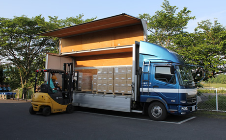

粗材調達から品質管理まで一貫した対応
コストダウン
治具設計から自社内で対応し、加工設備も自社内に豊富に整えているため、他社に運搬する必要もありません。また一貫対応を行っているからこそ、お客様と協業し改善活動を行います。

スピード納品
組立までを一貫して行うため、流通や事務処理にかかっていた時間を大きく削減することができます。当社におまかせいただけば、工程ごとに別の企業と打ち合わせる必要もありません。

仕様変更にもスピード対応
工程ごとに発注先企業を分けた場合、1つの仕様変更に対しての事務処理や現場の品質管理などの業務が煩雑になります。しかし当社は組立まで一貫した生産体制をとっているため、迅速な対応が可能です。
お客様の要望に応える、バラエティに富んだ生産品目
鋳造、鋼板問わず調達対応
機械・板金問わず生産対応
0.1kg～300kg程度まで対応
建設機械業界で認められた確かな技術
建設機械は都市開発のために整地したり、巨大な穴を掘ったりと、まさに「地球を相手にしている機械」で、高い強度と技術水準が必要とされます。また、自動車の3～5倍もの部品数が必要とされる機械でもあります。
当社は60年以上の長きに渡り、コマツ社やキャタピラー社といったグローバル大手建設機械メーカーの高い品質要求に応え、実績を築いてきました。
鉄のエキスパートとして培ったこの技術を、今後より多くの業界へ提供してまいります。